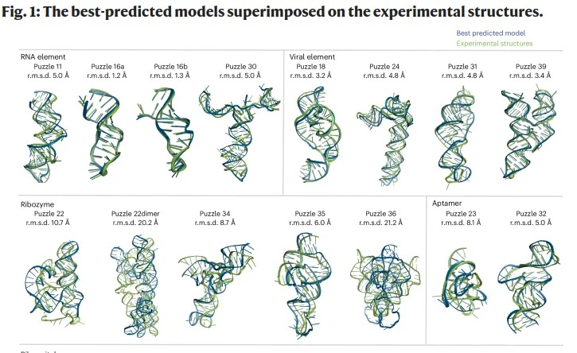
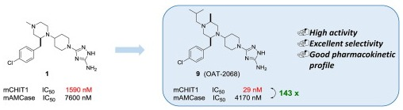

Filip Stefaniak
eng., PhD, hab.
Publications
Orcid: 0000-0001-5758-9416
Google scholar
PubMed
Scopus ID: 14623077600
Web of Science ResearcherID: ABS-0662-2022
List of publications in APA, ISO690, and MLA formats.
Generated on 2025-12-03
2025 Evaluation of single-template ligand-based methods for the discovery of small-molecule nucleic acid binders
Topics:

Bajusz D., Rácz A., Bujnicki JM., and Stefaniak F.
Evaluation of single-template ligand-based methods for the discovery of small-molecule nucleic acid binders
Briefings in Bioinformatics, Volume 26, Pages: bbaf620, 2025 | DOI: 10.1093/bib/bbaf620
IF: 7.7; 5-Year IF: 8.7
2025 MODOMICS: a database of RNA modifications and related information. 2025 update and 20th anniversary
Topics:

Sordyl D., Boileau E., Bernat A., Maiti S., Mukherjee S., Moafinejad SN., Amiri Farsani M., Shavina A., Cappannini A., Agostini G., Conticello SG., Stefaniak F., Dieterich C., Purta E., and Bujnicki JM.
MODOMICS: a database of RNA modifications and related information. 2025 update and 20th anniversary
Nucleic Acids Research, Volume 53, Pages: in press, 2025 | DOI: 10.1093/nar/gkaf1284
IF: 13.1; 5-Year IF: 16.8
2025 RNA-Puzzles Round V: blind predictions of 23 RNA structures
Topics:

Bu F., Adam Y., (...), Adamiak R.W., Stefaniak F., and et al.
RNA-Puzzles Round V: blind predictions of 23 RNA structures
Nat Methods, Volume 22, Pages: 399-411, 2025 | DOI: 10.1038/s41592-024-02543-9
IF: 36.1; 5-Year IF: 45.6
2024 DEGRONOPEDIA: a web server for proteome-wide inspection of degrons
Topics:
Szulc N.A., Stefaniak F., Piechota M., Soszyńska A., Piórkowska G., Cappannini A., Bujnicki J.M., Maniaci C., and Pokrzywa W.
DEGRONOPEDIA: a web server for proteome-wide inspection of degrons
Nucleic Acids Research, Volume 52, Pages: W221-W232, 2024 | DOI: 10.1093/nar/gkae238
IF: 14.9 (2022); 5-Year IF: 17.210
The webserver described in the paper: https://degronopedia.com/
2024 MODOMICS: a database of RNA modifications and related information. 2023 update
Topics:
Cappannini A., Ray A., Purta E., Mukherjee S., Boccaletto P., Moafinejad S.N., Lechner A., Barchet C., Klaholz B., Stefaniak F., and Bujnicki J.M.
MODOMICS: a database of RNA modifications and related information. 2023 update
Nucleic Acids Research, Volume 52, Issue D1, Pages: D239-D244, 2024 | DOI: 10.1093/nar/gkad1083
IF: 14.9 (2022); 5-Year IF: 17.210
The database described in the paper: https://iimcb.genesilico.pl/modomics/
2024 SimRNAweb v2.0: a web server for RNA folding simulations and 3D structure modeling, with optional restraints and enhanced analysis of folding trajectories
Topics:
Moafinejad S.N., Aquino B.R.H., Boniecki M.J., Pandaranadar Jeyeram I.P.N., Nikolaev G., Magnus M., Amiri Farsani M., Badepally N.G., Wirecki T.K., Stefaniak F., and Bujnicki J.M.
SimRNAweb v2.0: a web server for RNA folding simulations and 3D structure modeling, with optional restraints and enhanced analysis of folding trajectories
Nucleic Acids Research, Volume 52, Pages: W368-W373, 2024 | DOI: 10.1093/nar/gkae356
IF: 14.9 (2022); 5-Year IF: 17.210
2023 RNA tertiary structure prediction in CASP15 by the GeneSilico group: Folding simulations based on statistical potentials and spatial restraints
Topics:
Baulin E.F., Mukherjee S., Moafinejad S.N., Wirecki T.K., Badepally N.G., Jaryani F., Stefaniak F., Amiri Farsani M., Ray A., de Moura T.R., and Bujnicki J.M.
RNA tertiary structure prediction in CASP15 by the GeneSilico group: Folding simulations based on statistical potentials and spatial restraints
Proteins: Structure, Function, and Bioinformatics, Volume 91, Issue 12, Pages: 1800-1810, 2023 | DOI: 10.1002/prot.26575
IF: 2.9
2023 Structural interaction fingerprints and machine learning for predicting and explaining binding of small molecule ligands to RNA
Topics:

Szulc N.A., Mackiewicz Z., Bujnicki J.M., and Stefaniak F.
Structural interaction fingerprints and machine learning for predicting and explaining binding of small molecule ligands to RNA
Briefings in Bioinformatics, 2023 | DOI: 10.1093/bib/bbad187
IF: 13.994
2022 Design, Synthesis, and Development of pyrazolo[1,5-a]pyrimidine Derivatives as a Novel Series of Selective PI3Kδ Inhibitors: Part I—Indole Derivatives
Topics:
Stypik M., Zagozda M., Michałek S., Dymek B., Zdżalik-Bielecka D., Dziachan M., Orłowska N., Gunerka P., Turowski P., Hucz-Kalitowska J., Stańczak A., Stańczak P., Mulewski K., Smuga D., Stefaniak F., Gurba-Bryśkiewicz L., Leniak A., Ochal Z., Mach M., Dzwonek K., Lamparska-Przybysz M., Dubiel K., and Wieczorek M.
Design, Synthesis, and Development of pyrazolo[1,5-a]pyrimidine Derivatives as a Novel Series of Selective PI3Kδ Inhibitors: Part I—Indole Derivatives
Pharmaceuticals, Volume 15, Issue 8, Pages: 949, 2022 | DOI: 10.3390/ph15080949
IF: 5.215; 5-Year IF: 5.711
2022 MODOMICS: a database of RNA modification pathways. 2021 update
Topics:
Boccaletto P., Stefaniak F., Ray A., Cappannini A., Mukherjee S., Purta E., Kurkowska M., Shirvanizadeh N., Destefanis E., Groza P., Avşar G., Romitelli A., Pir P., Dassi E., Conticello S.G., Aguilo F., and Bujnicki J.M.
MODOMICS: a database of RNA modification pathways. 2021 update
Nucleic Acids Research, Volume 50, Issue D1, Pages: D231-D235, 2022 | DOI: 10.1093/nar/gkab1083
IF: 19.160; 5-Year IF: 17.210
The database described in the paper: https://iimcb.genesilico.pl/modomics/
2022 fingeRNAt—A novel tool for high-throughput analysis of nucleic acid-ligand interactions
Topics:
Szulc N.A., Mackiewicz Z., Bujnicki J.M., and Stefaniak F.
fingeRNAt—A novel tool for high-throughput analysis of nucleic acid-ligand interactions
PLOS Computational Biology, Volume 18, Issue 6, Pages: e1009783, 2022 | DOI: 10.1371/journal.pcbi.1009783
IF: 4.779
2021 (book chapter) Computational Modeling Methods for 3D Structure Prediction of Ribozymes
Topics:
Ghosh P., Nithin C., Joshi A., Stefaniak F., Wirecki T.K., and Bujnicki J.M.
(book chapter) Computational Modeling Methods for 3D Structure Prediction of Ribozymes
Ribozymes, Volume 2, Pages: 861-881, 2021 | DOI: 10.1002/9783527814527.ch33
2021 AnnapuRNA: A scoring function for predicting RNA-small molecule binding poses
Topics:
Stefaniak F., and Bujnicki J.M.
AnnapuRNA: A scoring function for predicting RNA-small molecule binding poses
PLOS Computational Biology, 2021 | DOI: 10.1371/journal.pcbi.1008309
IF: 4.700
The AnnapuRNA repository: https://github.com/filipspl/AnnapuRNA
2020 Benzoxazepine-Derived Selective, Orally Bioavailable Inhibitor of Human Acidic Mammalian Chitinase
Topics:
Andryianau G., Kowalski M., Piotrowicz M.C., Rajkiewicz A.A., Dymek B., Sklepkiewicz P.L., Pluta E., Stefaniak F., Czestkowski W., Olejniczak S., Mazur M., Niedziejko P., Koralewski R., Matyszewski K., Gruza M., Zagozdzon A., Salamon M., Rymaszewska A., Welzer M., Dzwonek K., Golab J., Olczak J., Bartoszewicz A., and Golebiowski A.
Benzoxazepine-Derived Selective, Orally Bioavailable Inhibitor of Human Acidic Mammalian Chitinase
ACS Med. Chem. Lett., Volume 11, Issue 6, Pages: 1228-1235, 2020 | DOI: 10.1021/acsmedchemlett.0c00092
IF: 3.975 (2019)
2020 Luciferase reporter assay for small-molecule inhibitors of MIR92b-3p function: Screening cyanopeptolins produced by Nostoc from the Baltic Sea
Topics:
Brzuzan P., Mazur-Marzec H., Florczyk M., Stefaniak F., Fidor A., Konkel R., and Woźny M.
Luciferase reporter assay for small-molecule inhibitors of MIR92b-3p function: Screening cyanopeptolins produced by Nostoc from the Baltic Sea
Toxicology in Vitro, Volume 68, Pages: 104951, 2020 | DOI: 10.1016/j.tiv.2020.104951
IF: 2.959
2020 RNAProbe: a web server for normalization and analysis of RNA structure probing data
Topics:
Wirecki T.K., Merdas K., Bernat A., Boniecki M.J., Bujnicki J.M., and Stefaniak F.
RNAProbe: a web server for normalization and analysis of RNA structure probing data
Nucleic Acids Research, Volume 48, Issue W1, Pages: W292-W299, 2020 | DOI: 10.1093/nar/gkaa396
IF: 16.971; 5-Year IF: 15.542
The web server described in the paper: https://rnaprobe.genesilico.pl/
2019 (conference paper) Riboswitch-ligand structure determination using an integrative structural biology approach
Topics:
Sordyl D., Boileau E., Bernat A., Maiti S., Mukherjee S., Moafinejad SN., Amiri Farsani M., Shavina A., Cappannini A., Agostini G., Conticello SG., Stefaniak F., Dieterich C., Purta E., and Bujnicki JM.
(conference paper) Riboswitch-ligand structure determination using an integrative structural biology approach
FEBS OPEN BIO, Volume 9, Pages: 243-243, 2019
2019 Development of Dual Chitinase Inhibitors as Potential New Treatment for Respiratory System Diseases
Topics:
Mazur M., Dymek B., Koralewski R., Sklepkiewicz P., Olejniczak S., Mazurkiewicz M., Piotrowicz M., Salamon M., Jędrzejczak K., Zagozdzon A., Czestkowski W., Matyszewski K., Borek B., Bartoszewicz A., Pluta E., Rymaszewska A., Mozga W., Stefaniak F., Dobrzański P., Dzwonek K., Golab J., Golebiowski A., and Olczak J.
Development of Dual Chitinase Inhibitors as Potential New Treatment for Respiratory System Diseases
Journal of Medicinal Chemistry, Volume 62, Issue 15, Pages: 7126-7145, 2019 | DOI: 10.1021/acs.jmedchem.9b00681
IF: 6.205 (2019)
2019 Structural bases of peptidoglycan recognition by lysostaphin SH3b domain
Topics:

Mitkowski P., Jagielska E., Nowak E., Bujnicki J.M., Stefaniak F., Niedziałek D., Bochtler M., and Sabała I.
Structural bases of peptidoglycan recognition by lysostaphin SH3b domain
Scientific Reports, Volume 9, Pages: 5965, 2019 | DOI: 10.1038/s41598-019-42435-z
IF: 4.122; 5-Year IF: 4.609
2018 Discovery of selective, orally bioavailable inhibitor of mouse chitotriosidase
Topics:

Mazur M., Bartoszewicz A., Dymek B., Salamon M., Andryianau G., Kowalski M., Olejniczak S., Matyszewski K., Pluta E., Borek B., Stefaniak F., Zagozdzon A., Mazurkiewicz M., Koralewski R., Czestkowski W., Piotrowicz M., Niedziejko P., Gruza M.M., Dzwonek K., Golebiowski A., Golab J., and Olczak J.
Discovery of selective, orally bioavailable inhibitor of mouse chitotriosidase
Bioorg Med Chem Lett., Volume 28, Issue 3, Pages: 310-314, 2018 | DOI: 10.1016/j.bmcl.2017.12.047
IF: 2.454; 5-Year IF: 2.286
2018 Exploring Baltic Sea cyanobacteria for small-molecule inhibitors of microRNA function: a project description
Topics:

Brzuzan P., Mazur-Marzec H., Stefaniak F., Woźny M., and Florczyk M.
Exploring Baltic Sea cyanobacteria for small-molecule inhibitors of microRNA function: a project description
ENVIRONMENTAL BIOTECHNOLOGY, Volume 14, Issue 1, Pages: 1-4, 2018 | DOI: 10.14799/ebms301
2018 Human RNA cap1 methyltransferase CMTr1 cooperates with RNA helicase DHX15 to modify RNAs with highly structured 5′ termini
Topics:
Toczydlowska-Socha D., Zielinska M.M., Kurkowska M., Astha, Almeida C.F., Stefaniak F., Purta E., and Bujnicki J.M.
Human RNA cap1 methyltransferase CMTr1 cooperates with RNA helicase DHX15 to modify RNAs with highly structured 5′ termini
Phil. Trans. R. Soc. B, Volume 373, Pages: 20180161, 2018 | DOI: 10.1098/rstb.2018.0161
IF: 5.666 (2017); 5-Year IF: 7.192
2018 Novel inhibitors of the rRNA ErmC′ methyltransferase to block resistance to Macrolides, Lincosamides, Streptogramine B antibiotics
Topics:
Foik I.P., Tuszynska I., Feder M., Purta E., Stefaniak F., and Bujnicki J.M.
Novel inhibitors of the rRNA ErmC′ methyltransferase to block resistance to Macrolides, Lincosamides, Streptogramine B antibiotics
Eur J Med Chem, Volume 146, Pages: 60-67, 2018 | DOI: 10.1016/j.ejmech.2017.11.032
IF: 4.519; 5-Year IF: 4.187
2018 RNArchitecture: a database and a classification system of RNA families, with a focus on structural information
Topics:

Boccaletto P., Magnus M., Almeida C., Zyla A., Astha, Pluta R., Baginski B., Jankowska E., Dunin-Horkawicz S., Wirecki T., Boniecki M., Stefaniak F., and Bujnicki J.M.
RNArchitecture: a database and a classification system of RNA families, with a focus on structural information
Nucleic Acids Research, Volume 46, Issue D1, Pages: D202-D205, 2018 | DOI: 10.1093/nar/gkx966
IF: 10.162
2018 Synthesis and characterization of novel classes of PDE10A inhibitors - 1H-1,3-benzodiazoles and imidazo[1,2-a]pyrimidines
Topics:

Moszczyński-Pętkowski R., Majer J., Borkowska M., Bojarski Ł., Janowska S., Matłoka M., Stefaniak F., Smuga D., Bazydło K., Dubiel K., and Wieczorek M.
Synthesis and characterization of novel classes of PDE10A inhibitors - 1H-1,3-benzodiazoles and imidazo[1,2-a]pyrimidines
European Journal of Medicinal Chemistry, Volume 155, Pages: 96-116, 2018 | DOI: 10.1016/j.ejmech.2018.05.043
IF: 4.519; 5-Year IF: 4.187
2016 Molecularly Imprinted Polymer (MIP) Film with Improved Surface Area Developed by Using Metal-Organic Framework (MOF) for Sensitive Lipocalin (NGAL) Determination
Topics:
Iskierko Z., Sharma P.S., Prochowicz D., Fronc K., D'Souza F., Toczydlowska D., Stefaniak F., and Noworyta K.
Molecularly Imprinted Polymer (MIP) Film with Improved Surface Area Developed by Using Metal-Organic Framework (MOF) for Sensitive Lipocalin (NGAL) Determination
ACS Appl. Mater. Interfaces, Volume 8, Issue 31, Pages: 19860-19865, 2016 | DOI: 10.1021/acsami.6b05515
IF: 7.504
2015 Discovery of TRAF-2 and NCK-interacting kinase (TNIK) inhibitors by ligand-based virtual screening methods
Topics:

Bujak A., Stefaniak F., Zdzalik D., Grygielewicz P., Dymek B., Zagozda M., Gunerka P., Lamparska-Przybysz M., Dubiel K., Wieczorek M., and Dzwonek K.
Discovery of TRAF-2 and NCK-interacting kinase (TNIK) inhibitors by ligand-based virtual screening methods
MedChemComm, Volume 6, Issue 8, Pages: 1564-1572, 2015 | DOI: 10.1039/C5MD00090D
IF: 2.608
2015 Modeling of ribonucleic acid–ligand interactions
Topics:
Stefaniak F., Chudyk E., Bodkin M., Dawson W., and Bujnicki J.M.
Modeling of ribonucleic acid–ligand interactions
WIREs Comput Mol Sci, Volume 5, Pages: 425-439, 2015 | DOI: 10.1002/wcms.1226
IF: 14.016
2015 Prediction of compounds activity in nuclear receptor signaling and stress pathway assays using machine learning algorithms and low dimensional molecular descriptors
Topics:

Stefaniak F.
Prediction of compounds activity in nuclear receptor signaling and stress pathway assays using machine learning algorithms and low dimensional molecular descriptors
Front. Environ. Sci., 2015 | DOI: 10.3389/fenvs.2015.00077
IF: 4.581